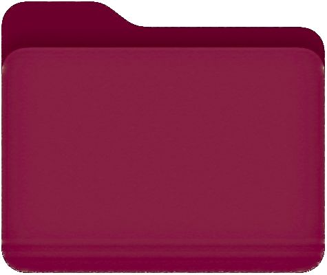

⭐ Projet Phare Master MIAS · IA & Endocrinologie

Système d’Aide à la Décision Médicale pour les Pathologies Thyroïdiennes
De l’analyse exploratoire des données à l’hybridation d’une ontologie sous Protégé (OWL, SPARQL, SWRL) et d’arbres de décision sous Weka.
Conception d’un SADM hybride robuste conciliant l'analyse statistique exploratoire (χ², Pearson), l'apprentissage supervisé sous Weka (arbre J48 à 99,58 % d'exactitude sur 3 772 patients UCI) et le raisonnement déductif d'une ontologie OWL 2 sous Protégé pour sécuriser le diagnostic et la posologie gériatrique selon l’EU AI Act.
📑 Rapport 41p (PDF)
🔬 3 772 patients (UCI)
🌲 J48 (99,58 %) + OntoThyroid
⚖️ Explicabilité & EU AI Act